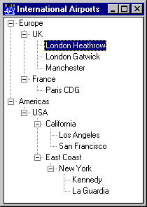

| Applies To: | TreeView |
Description
The Depth property specifies the structure of the items in a TreeView object. It is either a scalar 0 or an integer vector of the same length as the Items property.
A value of 0 indicates that the corresponding item is a top-level item. A value of 1 indicates that the corresponding item is a child of the most recent item whose Depth is 0; a value of 2 indicates that the corresponding item is a child of the most recent item whose Depth is 1, and so forth. For example:
| AIRPORTS | DEPTH | Description |
|---|---|---|
| Europe | 0 | Top-level (root) item |
| UK | 1 | 1st sub-item of Europe |
| London Heathrow | 2 | 1st sub-item of UK |
| London Gatwick | 2 | 2nd sub-item of UK |
| Manchester | 2 | 3rd sub-item of UK |
| France | 1 | 2nd sub-item of Europe |
| Paris CDG | 2 | 1st sub-item of France |
| Americas | 0 | Top-level (root) item |
| USA | 1 | 1st sub-item of N.America |
| California | 2 | 1st sub-item of USA |
| Los Angeles | 3 | 1st sub-item of California |
| San Francisco | 3 | 2nd sub-item of California |
| East Coast | 2 | 2nd sub-item of USA |
| New York | 3 | 1st sub-item of East Coast |
| Kennedy | 4 | 1st sub-item of NY |
| La Guardia | 4 | 2nd sub-item of NY |
'F'⎕WC'FORM' 'International Airports'
'F.TV'⎕WC'TreeView'AIRPORTS(0 0)(100 100)('Depth'DEPTH)